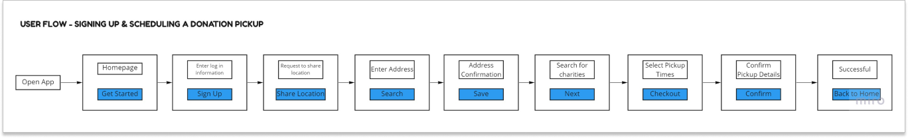
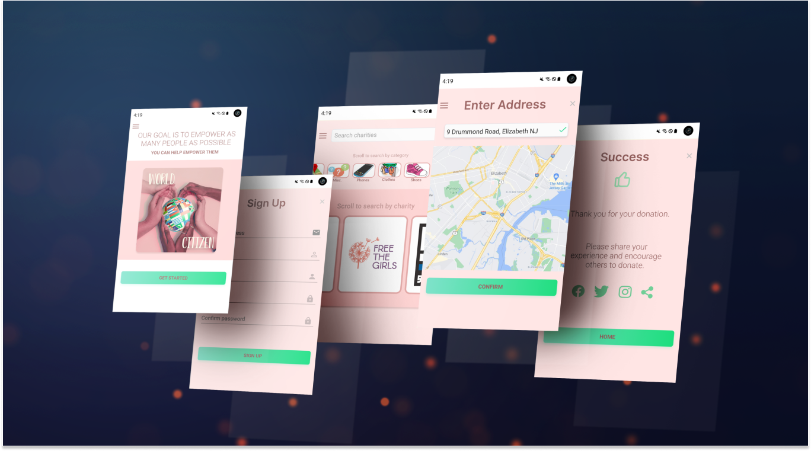

CHALLENGE:
World Citizen is a humanitarian organization with a vision to help people who are suffering and provide them with needed supplies. After a detailed analysis of the competitive landscape, the founders of World Citizen have decided to create an online clothing donation platform. The goal is that anyone can donate clothes easily.
SOLUTION:
An interface that visually presents relevant options to personalize the user experience, saving time spent searching.
TEAM:
This was a solo project as an assignment for Phase 1 of Reskill Americans bootcamp. I was heavily involved in the end-to-end design process which included user research, designing the screens, prototyping, and usability testing.
RESEARCH:
The first step in the project was to learn more about the enterprise of clothes donations.
I researched, analyzed, and compared how charities and for-profit organizations operate the clothes donation business.
After understanding the space, I turned my attention to the target users of the app.
I wanted to understand how users donate clothes and what would help make the process easier.
For research, I conducted live interviews via Zoom.
The participants were adults with busy lifestyles from both urban and suburban areas.
Through research, I found that user needs consisted of:
- Convenience
- Transparency of donations
I also learned some common user behavior:
- Companies/organizations are accessed primarily through mobile.
- Phones have surpassed desktop usage.
- Users have a preference for focused and personalized apps.
USER FLOW:
Before diving into specific designs, I created a user flow to help me visualize the main screens and features.
LOW FIDELITY:
Once I knew how the main screens would be, I focused on a couple of the key screens.
Here are some of the initial concepts:
HIGH FIDELITY:
Here are some high fidelity mockups.
Once the designs matured enough, I used Figma to create interactive protypes so users can have a more realistic feel when testing the app.
REFLECTIONS:
As my first assignment, what I learned was invaluable.
- I learned that I thoroughly enjoy prototyping. I have continued my learning in order to be able to produce as realistic a prototype as possible before it is sent to the development team.
- Coming up with meaningful user interview questions was challenging at first. After my first interview I realized that some changes were necessary to get better information to produce a design that users would enjoy to use.
- I learned that I truly have a genuine interest in design and that was my biggest motivation. The end-to-end process of this project was extensive but the desire to learn and create a great product was very motivating. I look forward to revisiting this project once I have more experience under my belt.